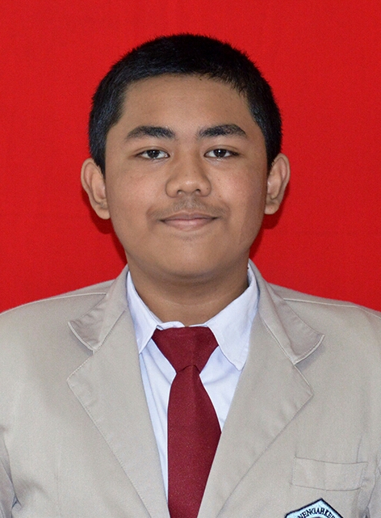

Hallo kalian......
Dulu sewaktu ku SMP, saya insya allah bisa mengikuti pelajaran dengan baik ,namun saya sekarang masih belum bisa nih.... , eh kalian saya sekarang sekolah di SMK-SMAK BOGOR

, keterima di sekolah ini adalah hal yang saya tidak sangka , karena pada saat saya mengikuti tes masuk saya belum mempersiapkan diri dengan maksimal sehingga saya ragu apakah bisa di terima atau tidak , dan sebenarnya saya itu tidak tau sekolah apa ini dan saya tidak sangka ini sekolah kimia , tetapi saya sangat senang karena setalah dengar perkataan orang lain tentang sekolah ini sya merasa bangga ( hehe maaf ya sedikit sombong ) jadi saya pun masuk ke sekolah ini
saya menjalankan kehidupan di SMK - SMAK Bogor ini sangat berbanding terbalik dengan kehidupanku yang dahulu.
Disini saya sering remedial dan melihat teman teman yang berjuang keras menghadapi remedial ini. Banyak kakak kelas yang berkata padaku bahwa anak SMAKBO itu tidurnya sedikit, mainnya sedikit, dan banyak sekali yang beramsusi aneh aneh tentang SMAKBO.
Dan ternyata benar, aku sudah merasakan semua yang dikatakan kakak kelas. Sekarang ini aku jarang tidur dan untuk main pun aku tidak ada waktu. Aku menjadi malas belajar ini dan itu, tetapi saya sampai saat ini masih berfikir bagaimana caranya agar saya bisa untuk tiak bermalas malasan , untuk bisa bangkit kembali
Sekian kisah singkat pendidikan yang telah ku tempuh akhir akhir ini. Semoga bermanfaat for kalian all.
selamat membaca dan sehat selalu.....